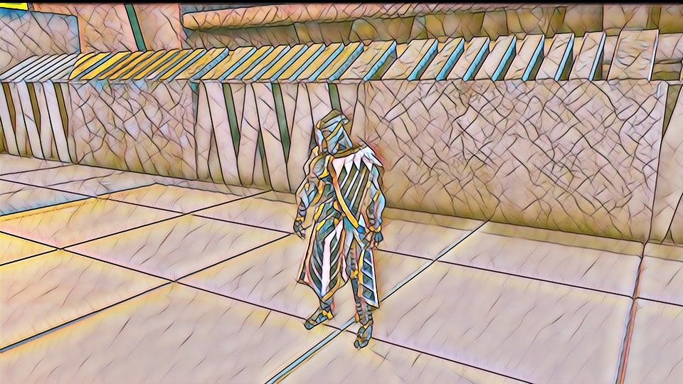
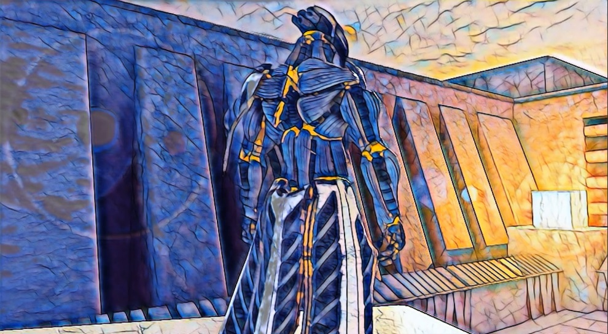
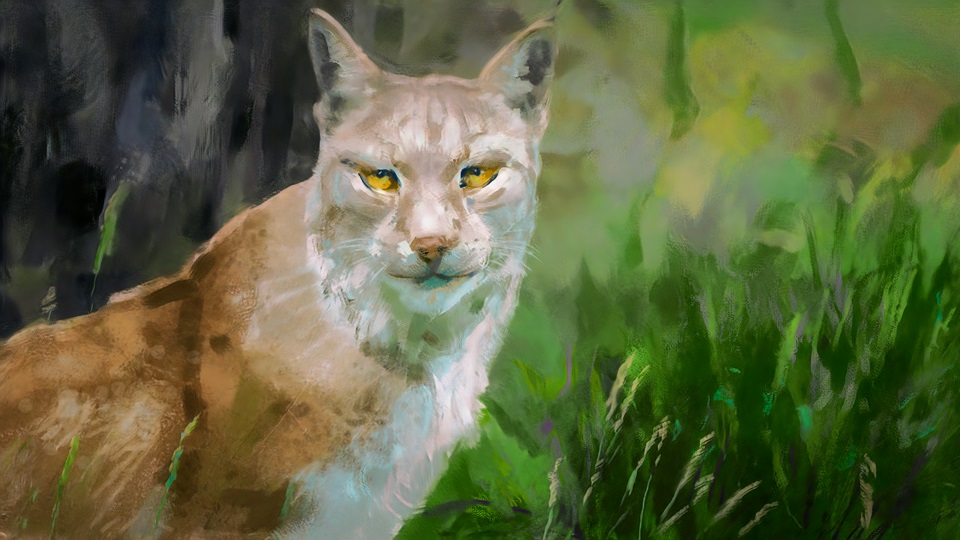
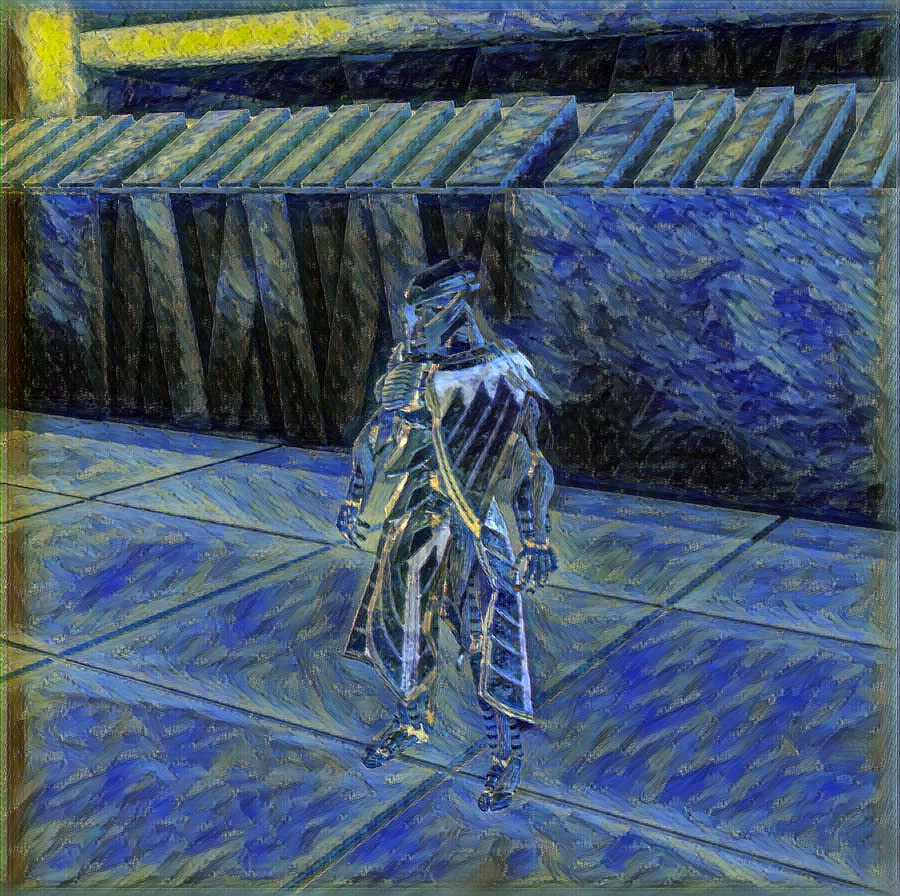
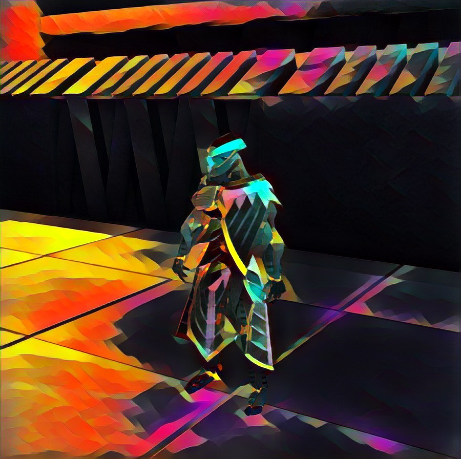

In-Game Style Transfer Experiments Pt.5
Introduction
I’m starting to see a trend where a seemingly difficult problem is easily resolved and something I didn’t think was going to be a problem turns out to be difficult.
Many-Shot Learning
I was able to get the video stylization model to correctly stylize in Unity by adding a lot more training examples. The creators of the model only needed a few training examples to get great results for a specific scene. I decided to try using around 80 examples to see if that would help it generalize. It did.

This model did produce a bit more flickering than the models trained on fewer examples. It should be easy to reduce the flickering by tuning the quality and quantity of the training examples. Output from this model can even be used as training examples for another model. Although, I actually prefer the color palette from the less accurate model.

Difficult to Learn Styles
Having resolved the discrepancy between the training results and Unity results, I started training models on different styles. I wanted to try styles that were very different from the mosaic image. I started with this sample output from the video stylization model.

The fast_neural_style model wasn’t able to do much more than transfer the color palette from this image. It failed to transfer texture or brush strokes. I tried a range of values for the training parameters but that didn’t really help. I then tried modifying the model architecture to see if I could get it to capture more subtle details. None of these changes produced acceptable results with the above image. This was unexpected since the model does a decent job learning the style of physical paintings.
Starry Night by Vincent van Gogh (link)
{kind=link}

It can also learn styles from some pieces of digital art.
Totem by Justin Maller (link)

The model might have difficulty capturing the style from the lynx image because of how the style is extracted during the training process. The style of an image is extracted using a model the was pretrained on a bunch of regular images. That model is used to determine whether the style transfer model is doing a good job. It’s possible that the pretrained model being used isn’t recognizing the style features I want. If that’s the case, using a different pretrained model might provide better results.
Conclusion
It’s annoying that the fast_neural_style model can’t seem to capture certain types of styles. Fortunately, I can use any style transfer model I want to generate the training examples for the video stylization model. I’d prefer to have a model that can produce good results with a wide variety of styles. However, it might be necessary to use multiple models that handle different styles. I want to develop a reliable workflow before I start writing an end-to-end tutorial.